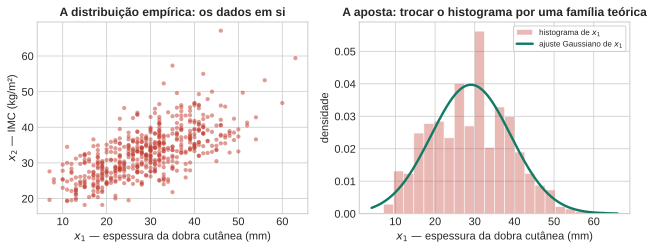
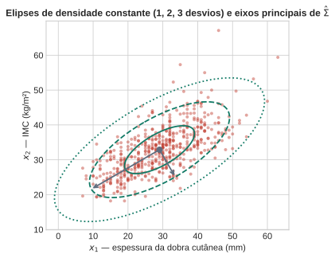
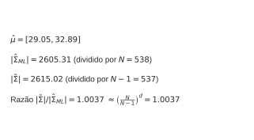
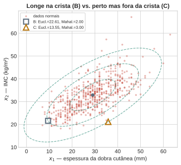
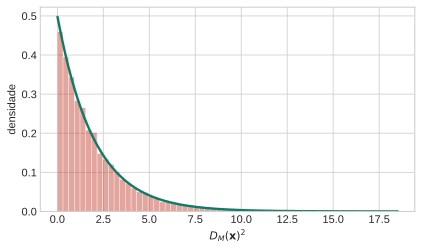
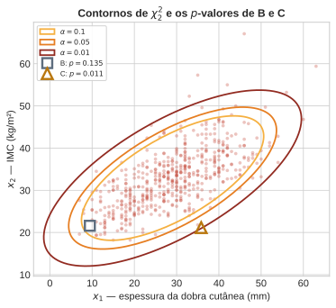
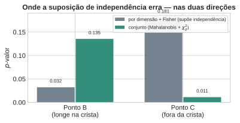
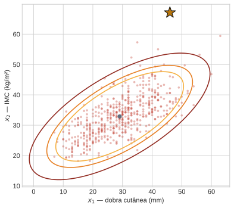
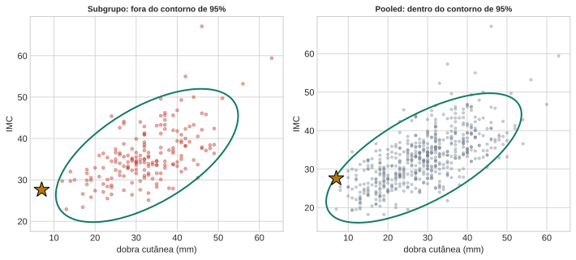

Aula 1: Modelos Generativos Paramétricos e Detecção de Anomalias
Aprendizado Não Supervisionado
2026-08-19
Como modelar dados sem rótulos?
Formulação
Sem rótulo \(y\) — só \(\mathbf{x}_1,\dots,\mathbf{x}_N\).
Que forma esses dados têm?
- Profiling: descrever o comportamento típico, depois reconhecer o desvio. Espessura da dobra cutânea e IMC variam juntas na população (dados reais, Pima Indians Diabetes) — um paciente novo se parece com isso?
- Abordagem: assumir uma família teórica → ajustar → usar a verossimilhança para decidir o que é típico.
Quatro Perguntas de Hoje
1. Que forma de modelo faz sentido sem rótulo — por que a Gaussiana multivariada?
2. Como ajustar essa forma aos dados — o que pode dar errado?
3. Como comparar um ponto novo ao modelo — por que não a distância Euclidiana?
4. Como virar isso uma afirmação probabilística rigorosa — e onde a receita quebra?

Distribuição Empírica vs. Teórica
Distribuição empírica: o histograma/a nuvem de pontos em si. Nunca “errada”, mas ruidosa e não generaliza.
Aposta desta aula: assumir uma família teórica com poucos parâmetros — troca ruído por estrutura, ao custo de a suposição poder estar errada.

Pergunta
Por que a distribuição empírica “nunca está errada” e ainda assim não basta para decidir se um ponto novo é típico ou anômalo?
(Pense: o que ela diz sobre uma região onde nenhum ponto foi observado?)
Gaussiana Multivariada
\[ \mathcal{N}(\mathbf{x}\mid\boldsymbol\mu,\Sigma) = \frac{1}{(2\pi)^{d/2}|\Sigma|^{1/2}} \exp\left\{-\tfrac12(\mathbf{x}-\boldsymbol\mu)^T\Sigma^{-1}(\mathbf{x}-\boldsymbol\mu)\right\} \]
- \(\boldsymbol\mu\): centro. \(\Sigma\): forma (autovetores = orientação, autovalores = comprimento dos eixos).
- Curvas de nível = elipsoides centrados em \(\boldsymbol\mu\).
Por que a Gaussiana? Máxima entropia dada média/covariância; Teorema Central do Limite (soma de muitos efeitos pequenos).

Máxima Verossimilhança
\[ \hat{\boldsymbol\mu} = \frac1N\sum_n \mathbf{x}_n \qquad \hat\Sigma_{\text{ML}} = \frac1N\sum_n(\mathbf{x}_n-\hat{\boldsymbol\mu})(\mathbf{x}_n-\hat{\boldsymbol\mu})^T \]
Viés: \(\mathbb{E}[\hat\Sigma_{\text{ML}}] = \frac{N-1}{N}\Sigma\). Correção: dividir por \(N-1\) (np.cov padrão).
Se \(N\le d\): \(\hat\Sigma\) não é invertível. Sem inversa, sem Mahalanobis, sem verossimilhança. Antecipa a maldição da dimensionalidade da Aula 2.

Pergunta
Julgue V ou F: Gaussiana multivariada e máxima verossimilhança
Julgue V ou F — a questão só conta se acertar os 4 itens:
- Os autovetores de \(\Sigma\) dão a orientação das elipses de densidade constante da Gaussiana multivariada; os autovalores dão o comprimento dos eixos.
- O estimador de máxima verossimilhança \(\hat{\boldsymbol\mu}\) é não-viesado: \(\mathbb{E}[\hat{\boldsymbol\mu}] = \boldsymbol\mu\).
- O estimador de máxima verossimilhança \(\hat\Sigma_{\text{ML}}\) (dividido por \(N\)) é não-viesado.
- Se \(N \le d\), a matriz \(\hat\Sigma_{\text{ML}}\) estimada não é invertível.
Resposta
Julgue V ou F: Gaussiana multivariada e máxima verossimilhança — Resposta
- Verdadeiro — é a interpretação geométrica padrão da forma quadrática.
- Verdadeiro — a média amostral é sempre não-viesada para a média populacional.
- Falso — \(\mathbb{E}[\hat\Sigma_{\text{ML}}] = \frac{N-1}{N}\Sigma \ne \Sigma\); é viesado, e a correção divide por \(N-1\).
- Verdadeiro — posto no máximo \(N-1\), precisa de posto \(d\) para ser invertível.
Distância de Mahalanobis
\[ D_M(\mathbf{x})^2 = (\mathbf{x}-\hat{\boldsymbol\mu})^T\hat\Sigma^{-1}(\mathbf{x}-\hat{\boldsymbol\mu}) \]
“Reduz à Euclidiana quando \(\Sigma=I\)” — em geral, não é a Euclidiana.
\(\Sigma^{-1}\) estica nas direções de baixa variância, comprime nas de alta variância.

Pergunta
Por que o ponto B, mais distante do centro em unidades brutas, tem uma distância de Mahalanobis menor que a do ponto C, mais próximo?
(Pense: \(\Sigma^{-1}\) estica o espaço nas direções de baixa variância, comprime nas de alta variância.)
Da Posição ao \(p\)-valor
Por que \(D_M(\mathbf{x})^2 \sim \chi^2_d\)?
Intuição: “desfazer” a elipse — devolver os dados a uma nuvem esférica sem correlação, variância \(1\). Ali, distância\(^2\) até o centro = soma de \(d\) normais padrão\(^2\) = \(\chi^2_d\), por definição.
Branqueamento: \(\mathbf{Y}=\Sigma^{-1/2}(\mathbf{X}-\boldsymbol\mu) \sim \mathcal{N}(\mathbf{0}, I_d)\) — verificado calculando média e covariância de \(\mathbf{Y}\).
\[\mathbf{Y}^T\mathbf{Y} = (\mathbf{X}-\boldsymbol\mu)^T\Sigma^{-1}(\mathbf{X}-\boldsymbol\mu) = D_M(\mathbf{X})^2\]
Logo \(D_M(\mathbf{X})^2 = \mathbf{Y}^T\mathbf{Y} \sim \chi^2_d\) — prova completa, não citação de livro (resultado clássico, não está no PRML/DLFC; verificado também por simulação a seguir).
Verificação: Simulação vs. \(\chi^2_d\) Teórica

20.000 pontos simulados de \(\mathcal{N}(\hat\mu,\hat\Sigma)\) — o histograma acompanha a curva teórica de perto.
Do Limiar ao \(p\)-valor
\[ p(\mathbf{x}) = 1 - F_{\chi^2_d}\big(D_M(\mathbf{x})^2\big) \]
- O que estamos tentando responder é “qual a probabilidade de um ponto do modelo ajustado ser tão extremo, ou mais, quanto \(\mathbf{x}\)?”
- E não qual a “probabilidade de \(\mathbf{x}\) vir do modelo certo”.
Limiar fixo = caso particular \(p(\mathbf{x})<\alpha\). \(p\)-valor ordena por surpresa em vez de só separar em duas caixas.
Armadilha de Interpretação
Aviso
\(p(\mathbf{x})\) pequeno não significa “probabilidade de \(\mathbf{x}\) pertencer à distribuição verdadeira” — significa “probabilidade de um ponto do modelo ajustado ser tão extremo quanto \(\mathbf{x}\)”. Se o modelo estiver errado, o \(p\)-valor também estará (volta como exemplo prático adiante).

Pergunta
Julgue V ou F: distância de Mahalanobis e o \(p\)-valor de anomalia
Julgue V ou F — a questão só conta se acertar os 4 itens:
- A distância de Mahalanobis reduz à distância Euclidiana quando \(\Sigma\) é a matriz identidade.
- Se \(\mathbf{x}\sim\mathcal{N}(\boldsymbol\mu,\Sigma)\), então \(D_M(\mathbf{x})^2\) segue uma distribuição qui-quadrado com \(d\) graus de liberdade.
- Um \(p\)-valor baixo para um ponto \(\mathbf{x}\) significa que a probabilidade de \(\mathbf{x}\) ter vindo da distribuição verdadeira é baixa.
- Dois pontos igualmente distantes do centro em distância Euclidiana podem ter distâncias de Mahalanobis bem diferentes.
Resposta
Julgue V ou F: distância de Mahalanobis e o \(p\)-valor de anomalia — Resposta
- Verdadeiro — é a própria definição, citada do PRML.
- Verdadeiro — verificado: \(\mathbf{Y}=\Sigma^{-1/2}(\mathbf{X}-\boldsymbol\mu)\sim\mathcal{N}(0,I_d)\), e \(\mathbf{Y}^T\mathbf{Y}\sim\chi^2_d\).
- Falso — é uma afirmação condicional ao modelo ajustado estar certo, não sobre a origem real de \(\mathbf{x}\).
- Verdadeiro — é exatamente o contraste entre os pontos B e C.
Conjunta vs. por dimensão
\(\hat\Sigma\) diagonal = supor independência (PRML p. 84: mais rápido de inverter, mas “limita a capacidade de capturar correlações interessantes”).
Por dimensão: \(p_i(x_i)\) da marginal \(\mathcal{N}(\hat\mu_i,\hat\sigma_i^2)\). Combinado por Fisher: \(-2\sum_i\ln p_i \sim \chi^2_{2d}\).

Onde a Suposição de Independência Erra

B: cada coordenada parece extrema isolada — o teste por dimensão dá falso alarme. O teste conjunto reconhece a correlação esperada.
C: cada coordenada parece normal isolada — o teste por dimensão deixa passar. O teste conjunto vê a correlação quebrada.
Nenhum dos dois está “certo” em geral — o preço da independência depende de onde a anomalia acontece. Mesma lição do Naive Bayes.
Pergunta
Julgue V ou F: teste conjunto vs. teste por dimensão
Julgue V ou F — a questão só conta se acertar os 4 itens:
- Supor \(\Sigma\) diagonal equivale a supor independência entre as dimensões dos dados.
- O teste por dimensão, combinado pelo teste de Fisher, usa \(d(d+1)/2\) parâmetros — o mesmo que o teste conjunto via Mahalanobis.
- Um ponto pode ter \(p\)-valor baixo em cada dimensão isoladamente e ainda assim ter \(p\)-valor conjunto alto, se o desvio observado for consistente com a correlação entre as dimensões.
- Um ponto pode parecer normal em cada dimensão isoladamente e ainda assim ser uma anomalia no teste conjunto, se ele quebrar a relação de correlação entre as dimensões.
Resposta
Julgue V ou F: teste conjunto vs. teste por dimensão — Resposta
- Verdadeiro — é a restrição discutida no PRML §2.3, p. 84.
- Falso — é o oposto: por dimensão usa só \(d\) parâmetros; o conjunto (Mahalanobis) usa \(d(d+1)/2\).
- Verdadeiro — é exatamente o caso do ponto B (falso alarme do teste por dimensão).
- Verdadeiro — é exatamente o caso do ponto C (anomalia real que escapa do teste por dimensão).
Exemplo Prático: Detecção de Anomalia em Ação
Por que Detectar Anomalias, Afinal?
- Não é diagnóstico — o rótulo de diabetes nunca entrou no ajuste.
- Uso real: controle de qualidade de dados (erros de coleta) e triagem de perfis atípicos que merecem uma segunda checagem.
- \(p(\mathbf{x})\) baixo = “olhe aqui com mais atenção”, não uma sentença.
A População é só de Pessoas Saudáveis?
Não — coorte clínica geral: \(359\) sem diabetes, \(179\) com diabetes (\(N=538\)). Uma mistura real, não uma referência “normal” isolada.
O rótulo existe no dataset, mas não foi usado para ajustar \(\hat{\boldsymbol\mu}\)/\(\hat\Sigma\) — só reaparece depois, para explicar os casos a seguir.
Um Exemplo Completo, do Início ao Fim
Paciente real: espessura \(=46\)mm, IMC \(=67{,}1\) (o maior do dataset).
1. Modelo ajustado (Bloco 4): \(\hat{\boldsymbol\mu}\), \(\hat\Sigma\) de 538 pacientes.
2. Mahalanobis (Bloco 5): \(D_M(\mathbf{x})^2 \approx 29{,}85\).
3. \(p\)-valor (Bloco 6): \(p(\mathbf{x}) \approx 3{,}3\times 10^{-7}\) — inequívoco.
Uma Anomalia Real, Sem Ambiguidade

IMC no percentil \(99{,}8\) sozinho — um teste ingênuo por dimensão também pegaria este caso. Nem toda anomalia depende de correlação quebrada; a maioria é só um valor extremo isolado.
Quando o Modelo Erra: um Veredito que Muda de Lado
Paciente diabética real: dobra cutânea \(=7\)mm (mínimo do dataset), IMC \(=27{,}6\).

Subgrupo (só diabéticas): \(p\approx 0{,}016\) — flagrada. Pooled (população inteira): \(p\approx 0{,}057\) — não flagrada. Mesma paciente, mesmos números — só a população de referência muda.
Qual dos Dois Confiar, e Por Quê?
Nenhum \(p\)-valor está “errado” — cada um é correto dentro do seu próprio modelo. A pergunta é qual modelo é apropriado aqui.
Diabéticas carregam mais gordura subcutânea em média — esta paciente destoa dentro do subgrupo. O modelo pooled não sabe que o subgrupo existe: sua noção de “típico” é uma média borrada com as não-diabéticas magras, o que a esconde.
A lição: o modelo pooled foi a ferramenta errada — a população não é uma única Gaussiana, é uma mistura. Uma anomalia real de subgrupo pode escapar exatamente por ter sido agrupada numa única referência.
Desafios e Limitações da Receita
Limitações da Receita
- Multimodalidade: uma Gaussiana só descreve uma média cega entre subpopulações distintas — como diabéticos/não-diabéticos aqui (IMC médio \(31{,}4\) vs. \(35{,}9\)). É por isso que o veredito da paciente do exemplo anterior mudou de lado.
- Outliers no ajuste: inflam \(\hat\Sigma\), escondem o que se queria detectar. Exemplo real: 1 paciente com \(99\)mm de dobra cutânea já infla \(\det\hat\Sigma\) em \(\sim 13\%\).
Retomando as Perguntas de Abertura
1. Forma sem rótulo: Gaussiana multivariada (entropia máxima, TCL).
2. Ajuste: MLE — \(\hat{\boldsymbol\mu}\), \(\hat\Sigma\) (viesado; trava se \(N\le d\)).
3. Comparação: Mahalanobis, não Euclidiana.
4. Rigor: \(p\)-valor via \(\chi^2_d\) — quebra sob multimodalidade e outliers.
Ponte para a Aula 2
Relaxar a suposição de família única: \(k\)-NN e KDE, densidade não-paramétrica. Preço: a maldição da dimensionalidade.
UNICAMP — Instituto de Computação